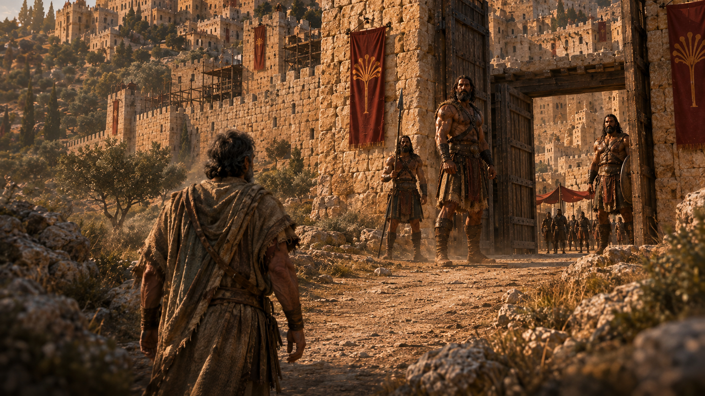

The question
Were the Anakim really giants?
The biblical texts portray the Anakim as exceptionally imposing people associated especially with Hebron and describe them using extraordinary stature language. Determining what those descriptions represented historically is much harder, and archaeology has not established a population of superhuman giants.
Let's examine the witnesses.
Primary text · Numbers 13
The spies saw something at Hebron
Their mission was practical intelligence: inspect the land, its inhabitants, settlements, defenses, and resources. At Hebron, the report becomes specific.
Land
Was it good or poor?
People
Were they strong or weak?
Settlements
Camps or fortified cities?
Resources
Fertile or lean?
Hebron
Sheshai · Ahiman · Talmai
Initial finding: the first testimony is not simply “we saw monsters.” It reports named inhabitants inside a formidable urban landscape.
Identity file · Numbers 13:22; Joshua 15:14; Judges 1:10
Three names at Hebron
Ancient name
Sheshai
Cinematic appearance reconstructed
Ancient name
Ahiman
Cinematic appearance reconstructed
Ancient name
Talmai
Cinematic appearance reconstructed
What we know
- The names are preserved repeatedly with Hebron.
- They are linked to Anak in the narrative traditions.
- They remain recognizable across Numbers, Joshua, and Judges.
What we don't know
- No detailed physical biographies survive.
- The texts do not distinguish their individual appearances.
- They may represent individuals, family or clan designations, ancestral names, or traditions with group significance.
Claim audit
Were they really giants?
What the text actually claims
Extraordinary stature and reputation
Numbers presents people of great size and the scouts' grasshopper comparison. Deuteronomy remembers the Anakim as “great and tall” and rhetorically asks who could stand before them.
Primary textWhat modern retellings often claim
Exact heights and excavated proof
The texts do not give the Anakim a numerical height. Claims of 8-, 12-, or 20-foot Anakim, identified skeletons, DNA, or the remains of the three named figures go beyond the available evidence.
Not establishedCinematic visualization ≠ ancient measurement
Textual tradition · Numbers 13:33
Anakim or Nephilim?
The received Hebrew textual tradition explicitly connects the descendants of Anak with the Nephilim. That is a real textual link—but it is not a complete biological family tree.
Scholars analyze Numbers 13–14 as a complex literary and textual tradition. The sudden Nephilim reference intensifies the scouts' report and has its own history of transmission; it should not be simplified into the claim that the Anakim were definitively the beings described in Genesis 6.
Textual scholarship: Evidence of EditingComparative tradition · Deuteronomy 2 and 9
The Rephaim connection
Deuteronomy uses comparison and classification: the Emim were regarded as Rephaim, “like the Anakim.” That relationship matters, but it does not make every term an interchangeable label for one clearly defined population.
Follow the evidenceInvestigate the Rephaim→Forensic testimony analysis · Numbers 13:27–33
The grasshopper effect
The report changes as it travels. Facts about terrain, cities, and named inhabitants become a conclusion about defeat—then expand into language no scout could directly verify.
- 01 · Observation
What could be seen
- Fortified cities
- Formidable inhabitants
- Descendants of Anak
- Sheshai · Ahiman · Talmai
- Hebron
- 02 · Interpretation
What the scouts concluded
- The people are stronger than we are
- We cannot go up against them
- 03 · Rhetorical escalation
What the report became
- The land devours its inhabitants
- All the people are of great size
- Nephilim
- We seemed like grasshoppers
We seemed like grasshoppers.“…and so we seemed to them.”
Forensic question
How could they know?
The scouts could describe how small they felt. Claiming they also appeared small to the Anakim claims knowledge of the other side's perception. That does not prove a lie. It shows that the nature of the testimony has changed.
Counter-witness · Numbers 13:30; 14:6–9
Caleb saw something different
Other scouts
Same threat
- Fortified cities
- Formidable inhabitants
- Anakim
Caleb
Same threat
- Fortified cities
- Formidable inhabitants
- Anakim
Same land. Same Anakim. Different conclusion.
Analytical finding: the threat does not change. The interpretation does.
Narrative payoff · Joshua 14:6–15; 15:13–14
Caleb went back
Years pass

Source comparison · Joshua 11, 14–15 / Judges 1
Who defeated the Anakim?
Joshua tradition
Conquest summarized, inheritance personalized
Joshua 11 credits Joshua's campaign with cutting off the Anakim from the hill country. Joshua 14–15 then makes Hebron Caleb's inheritance and says Caleb drove out Sheshai, Ahiman, and Talmai.
Judges tradition
Judah advances; Caleb's line remains central
Judges 1 frames the action through Judah's campaign and again remembers the defeat of the three named descendants of Anak at Hebron.
When ancient sources preserve a seam, show the seam.
Geographic trail · Joshua 11:21–22
Some survived
The conquest summary sounds final—until the text interrupts its own ending.
Joshua 11:22 preserves a remainder: Anakim survived in Gaza, Gath, and Ashdod. That westward trail carries the investigation into another cluster of giant-warrior traditions.
Evidence chain · Joshua 11 / 1 Samuel 17 / 2 Samuel 21 / 1 Chronicles 20
Why does Gath matter?
- AnakimJoshua 11:22 · some remain at Gath
- Goliath1 Samuel 17 · the champion is from Gath
- Later warriors2 Samuel 21 / 1 Chronicles 20 · extraordinary warriors associated with Gath
Geography is not genealogy.
The texts create a genuine geographic convergence. They do not provide a direct line from Anak to Goliath. Are these stories preserving memories of related populations, or did Gath become a literary and geographic center for giant-warrior traditions?
Related evidence at Gath
1 Chronicles 20:6–8
The six-fingered warrior
The text associates this extraordinary warrior with Gath and the Rapha tradition. It does not identify him as an Anakite.
Textual forensics · 1 Samuel 17:4
How tall was Goliath?
The Dead Sea Samuel manuscript, important Septuagint witnesses, and Josephus support the shorter reading. The variation shows that even famous ancient height traditions survive in different textual forms.
Scholarly source: 1 SamuelMaterial evidence
What the ground actually says
Established / supported
- Tel Hebron belongs to a real, long-lived ancient settlement landscape.
- Excavation has exposed substantial fortification systems at Hebron, including major wall and Iron Age defensive elements.
- Tell es-Safi/Gath was a major ancient settlement and later a major Philistine center.
- The traditions use real geographic locations.
Intriguing / interpretive
- Memories of fortified cities and powerful populations may have contributed to traditions of intimidating inhabitants.
- An inscription from Tell es-Safi preserves personal-name forms discussed in relation to the linguistic environment of the name Goliath.
- This is cultural context—not proof of the biblical warrior.
Not established
- A race of superhuman Anakim
- Anakim giant skeletons, DNA, or 8–12-foot remains
- Archaeological identification of Sheshai, Ahiman, or Talmai
- Proof that the cinematic Anakim scale is historical
Extraordinary claims do not get easier evidence standards because they are more exciting.
Confidence, not certainty theater
What were the Anakim?
The Anakim are an ancient textual tradition.
They are repeatedly associated with specific people and places, particularly the southern hill country and Hebron.
They had a reputation for extraordinary stature and power.
Their relationship to the Nephilim and Rephaim is not a simple family tree.
Their actual physical height cannot be securely reconstructed from the available evidence.
Archaeology has not proven a superhuman Anakim population.
Why did Israel fear them?
In the biblical narrative, the Anakim combine:
Evidence desk
Questions the evidence can answer
Who were the Anakim?
An ancient biblical tradition associated especially with Hebron and the southern hill country, portrayed as formidable people of extraordinary stature.
Were the Anakim giants?
The texts use extraordinary stature language and connect them with giant traditions, but provide no secure physical measurement. Archaeology has not established a superhuman population.
Were the Anakim related to the Nephilim?
Numbers 13:33 in the received Hebrew tradition says yes at the level of textual connection. A precise genealogy across the traditions is not established.
Were the Anakim Rephaim?
Deuteronomy compares or classifies the Anakim and Emim within Rephaim traditions. The relationship is genuine, but the terms are not simply interchangeable.
Who were Sheshai, Ahiman, and Talmai?
They are three names preserved at Hebron across Numbers, Joshua, and Judges. No detailed biographies or distinct physical descriptions survive.
Did Anakim survive at Gath?
Joshua 11:22 preserves a tradition that Anakim remained in Gaza, Gath, and Ashdod.
Was Goliath an Anakite?
The texts place surviving Anakim and Goliath at Gath, but they do not give a direct genealogy. Geography is evidence of convergence, not proof of descent.
Has archaeology found evidence of the Anakim?
Archaeology supports the real settlement worlds of Hebron and Gath. It has not identified a superhuman Anakim population or any of the named Anakites.
Source ledger
Read the evidence
Primary texts
- Numbers 13–14Mission, Hebron, names, report, grasshopper language, Caleb.
- Deuteronomy 1, 2, and 9Anakim stature and Rephaim/Emim comparisons.
- Joshua 11, 14, and 15Geography, survival at Gath, Caleb, and Hebron.
- Judges 1Judah, Caleb, Hebron, and the three names.
- 1 Samuel 17Goliath of Gath and the height tradition.
- 2 Samuel 21 / 1 Chronicles 20Later extraordinary warriors associated with Gath.
Scholarship and archaeology
- Müller, Pakkala & Romeny, Evidence of EditingLiterary growth and the Nephilim motif in Numbers 13–14.
- Ben-Shlomo, “New Evidence of Iron Age II Fortifications at Tel Hebron”Archaeological fortification evidence.
- Tell es-Safi/Gath II: Excavations and StudiesPeer-reviewed final excavation reports.
- Maeir et al., Tell es-Safi/Gath inscriptionPersonal-name forms and the Philistine linguistic environment.
- Keith Bodner, 1 SamuelThe four-cubit and six-cubit textual witnesses.
Primary textTextual variantScholarly interpretationArchaeologyCinematic reconstruction
The door beyond
The giants didn't have to become smaller.
Caleb had to stop seeing himself as a grasshopper.
The walls remain massive. The Anakim remain imposing. The physical danger has not changed.
How big is fear making it?The Anakim left Hebron.
The giant stories didn't. Ancient Mysteries Rediscovered